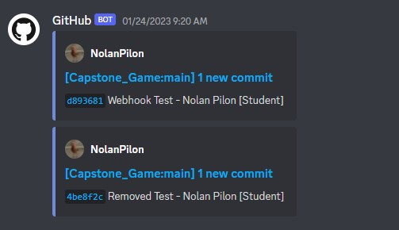
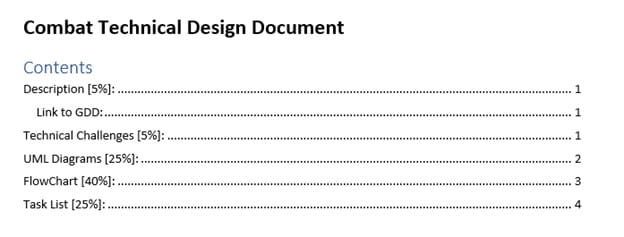
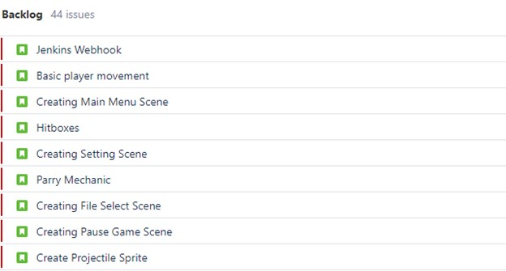

| Capstone Progress Week 3 | This week, we spent a large majority of our time working on our Technical Design Documents. Our deadline for the TDD’s was the 26th of January. When I finished my TDD, I decided to work on the GitHub webhook. It turned out to be a lot simpler than I was expecting and the only issue I had was with modifying the URL that links GitHub with Discord. I also decided to test this by adding a blank Unity project to the repository. I had an issue with linking the repository to the folder I was working in, but William helped me brainstorm ideas to get this working.  As for issues with the TDD’s, the only major problem we ran into was that Pamela had to change her technical challenge to include audio functionality, since it was difficult to design flow charts for only the art assets. On the day of submission, there was a major snowstorm, so most groups decided to work remotely. We came into class since most of us had our work saved on the school computers and didn’t think of saving a copy to our personal computers. The day was spent reviewing each other’s work and making some minor changes before sending them off for grading. I completely forgot about the section for dividing my work into a task list, so I spent a few minutes adding this in. Once we were all satisfied with our work, we handed them all in.  There was still a lot of time left in the day, so we decided to discuss the project with James. This was a great opportunity since it let us clarify any questions or concerns, we may have had for the upcoming weeks of the project. Before heading out, we added all our tasks from our TDD task lists to the backlog of our Jira board in preparation for week 4.  Next week will be the start of a new sprint. This will be when we officially start working in Unity on the basic mechanics of our game. The planning phase is now over. |
|---|